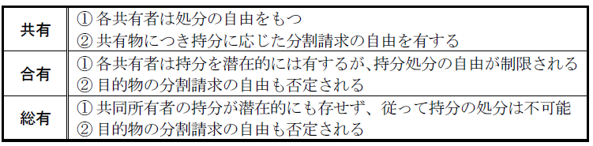
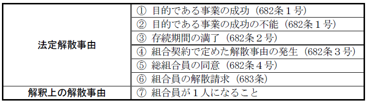
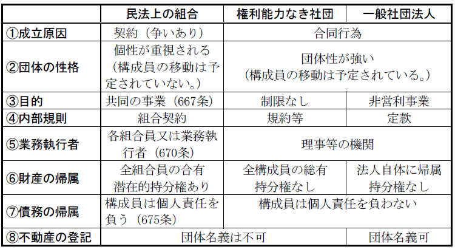
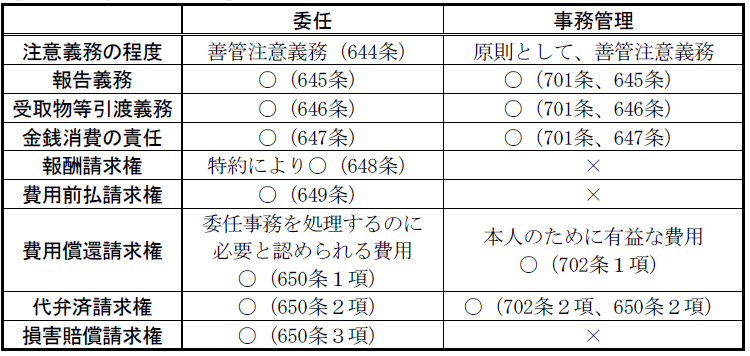

第６編 契約各論
第10章 組合
1. 意義
組合契約とは、２人以上の当事者がそれぞれ出資をして共同の事業を営むことを約する契約をいう（667条。ex.株式会社設立のための発起人組合）。
諾成・双務・有償の契約である。
2. 特徴
ⅰ 組合の団体的性格等の特殊性から、同時履行の抗弁権の規定（533条）、危険負担の規定（536条）は適用されない（667条の２第１項）。
ⅱ 債務不履行を理由として、組合契約を解除することはできない（667条の２第２項）。
ⅲ 組合員の一人に意思表示の無効・取消しの原因があっても、他の組合員間の組合契約の効力に影響はない（667条の３）。
※ かかる組合の特殊性を重視し組合を双務契約ではなく、「合同行為」であると解する見解もある。
２人以上の当事者による合意によって成立する諾成かつ不要式の契約である。
組合契約においては、①２人以上の者が、②出資をして、③共同の事業を営む目的の下に、④合意をすることが必要である。
1. 原則
組合員の過半数で業務を決定し、各組合員が業務を執行する。
2. 委任がある場合
(1) 組合契約で、業務決定・執行を、組合員または第三者（業務執行者）に委任することができる。
業務執行者は、1人でも複数でもよい。
(2) 業務執行者が複数の場合、業務執行者の過半数で業務を決定し、各業務執行者が業務を執行する。
(3) 業務執行者がいる場合でも、①組合員全員の同意による業務決定、②組合員全員による業務執行はすることができる。
3. 常務
原則として、各組合員または各業務執行者が単独でできる。ただし、完了前に他の組合員または業務執行者が異議を述べたときは、上記1.や2.の方法による。
1. 業務執行者を定めていないとき
各組合員は、組合員の過半数の同意を得れば、他の組合員を代理することができる。
2. 業務執行者を定めているとき
業務執行者のみが組合員を代理できる。
業務執行者が複数の場合、各業務執行者は、業務執行者の過半数の同意を得れば、組合員を代理することができる。
3. 常務の代理
常務は、各組合員または各業務執行者が単独で各組合を代理できる。
組合には、出資された財産や事業の過程で取得した財産などの組合財産があるので、それに対する組合員の権利関係を考えておく必要がある。
1. 組合財産
(1) ｢共有｣（668条）の意義
668条にいう｢共有｣の意義につき争いがある。
→ 一般に「合有」と解されている。

(2) 分割請求・持分処分の制限
組合員は組合財産についてその持分を処分したときは、その処分をもって組合及び取引をした第三者に対抗することができず（676条１項）、清算前に組合財産の分割を求めることもできない（676条３項）。
ただし、総組合員の合意による組合財産の分割は許される（大判大２.６.28）。
組合員は脱退の際に持分の払戻請求権をもつ（681条２項）。
2. 組合の債権
(1) 総説
組合債権も、総組合員に合有的に帰属し、各組合員は潜在的持分を有するにすぎない。よって、組合債権は各組合員の分割債権とはならず（大判昭13.２.12）、以下のような性質をもつことになる。
(2) 組合員の債権者の権利の行使の禁止（677条）
組合員の債権者は、組合財産に対して権利を行使することができない。例えば、組合の債務者はその債務と組合員に対する債権とを相殺することができず、組合員の側からも、組合債権と自己固有の債務とを相殺することはできない（これは676条１項の処分に当たることになる）。
これに対して、組合の債権者が、その債権と組合員に対して負っている債務とを相殺することは禁じられていない。
(3) 債権の行使
債権は業務執行者が行使する。業務執行者がいなければ、全組合員が共同して行使する。組合債権の一部でも自己の権利として単独で取り立てることはできない（676条２項。大判昭13.２.12）。
3. 組合の債務
(1) 混同の有無
組合員が組合に対して債権を有するに至っても、その債権と組合員としての組合債務についての負担部分との混同は生じない（大判昭11.２.25）。
(2) 債権者の権利行使
組合の債権者は、組合財産についてその権利を行使することができ、組合財産のほか、組合員個人の財産に対しても強制執行することができる（675条）。
この場合、組合員の責任は出資額等によって限定されることがない（無限責任）。ただし、組合員は損益分配の割合に基づき分割して債務を負う。
組合債務の引当は、①組合財産、②各組合員個人の財産（分割して債務を負うのであり、連帯するのではない）ということになるが、両者の間には主従の差はない。すなわち、②は補充責任ではなく、組合財産に対する強制執行前であっても、組合員個人に対してその責任を追及することができる。
4. 損益分配（674条）
(1) 内部的割合
割合は組合契約で定める。出資の価額に対応する必要はないが、あらかじめ定めがない限り出資の価額に応じて定める（674条１項）。
損失分担の割合と利益分配の割合が異なってもよく、損失を分担しない者がいてもよい（大判明44.12.26）。
利益又は損失の一方についてのみ割合を定めたときは、その割合は、共通であるものと推定される（674条２項）。
(2) 組合の債権者との関係
組合の債権者は、損失分担の割合又は等しい割合のいずれかを選択して各組合員に対して、その権利を行使することができる（675条２項本文）。ただし、債権発生時に損失分担割合を知っていたときは、損失分担割合によって権利を行使することになる（同項ただし書）。
等しい割合による権利行使を認めているのは、内部の取り決めにすぎない損失分担を知らなかった債権者を保護するためである。
5. 組合の業務及び財産状況に関する検査（673条）
各組合員は、組合の業務の決定及び執行をする権利を有しないときであっても、その業務及び組合財産の状況を検査することができる(673条)。組合財産は総組合員の共有財産であることから、業務の決定及び執行をする権利を有しない組合員にも業務及び財産状況の調査が認められる。
1. 加入
組合員全員の同意によって、又は組合契約の定めるところにより、新たに組合員を加入させることができる（677条の２第１項）。組合の成立後に加入した組合員は、加入前に生じた組合の債務については責任を負わない（同条２項）。
組合員の加入があっても、組合の同一性は持続する。
加入の結果、その者は組合財産につき出資に応じて持分を有することになり、 既存組合員の持分の比率は当然に減縮する。
2. 組合員たる地位の譲渡
民法には規定がないが、組合契約ないし組合員全員の同意により許容されている限り有効である。
3. 脱退
(1) 任意脱退（678条）
組合契約で組合の存続期間を定めなかったとき、又はある組合員の終身の間組合が存続すべきことを定めたときは、各組合員はいつでも脱退することができる。ただし、組合に不利な時期に脱退するには、やむを得ない事由がなければならない（同条１項）。
また、組合の存続期間を定めた場合であっても、各組合員は、やむを得ない事由があるときは、脱退することができる（同条２項）。
やむを得ない事由があっても任意の脱退を許さない旨の定めは無効である（最判平11.2.23）。
(2) 非任意脱退（679条、680条）
(a) 組合員の死亡（679条１号）
ただし、組合員が死亡したときは相続人がその地位を承継する旨の組合契約は有効であると解される。
(b) 破産手続開始の決定（679条２号）
(c) 後見開始の審判（679条３号）
(d) 除名（679条４号、680条）
正当な事由ある場合に限り、他の組合員の一致をもってすることができる。ただし、除名した組合員にその旨を通知しなければ、これをもってその組合員に対抗することができない（680条）。
(3) 脱退の効果
将来に向かって生ずる。
(a) 持分
脱退した組合員が組合財産について持っていた持分は、当然に他の組合員に帰属し、他の組合員は持分を拡大することになる。
脱退した組合員の持分は、その出資の種類を問わず、金銭で払い戻すことができる（681条２項）。
(b) 脱退した組合員の責任（680条の２）
ⅰ 脱退した組合員は脱退後に生じた組合債務については責任を負わないが、脱退前に生じたものにはなお責任を負う。
ⅱ 脱退前に生じた債務について責任を負う場合、脱退した組合員は、債権者が全部の弁済を受けない間、以下のいずれかを請求できる。
① 組合に担保を供させること
② 組合に自己を免責させること
ⅲ 脱退した組合員が脱退前の債務を弁済した場合、組合に求償できる。
4. 業務執行組合員の辞任及び解任
組合契約の定めるところにより１人又は数人の組合員に業務の決定及び執行を委任したときは、その組合員は、正当な事由がなければ、辞任することができない（672条１項）。ただし、正当な事由がある場合に限り、他の組合員の一致によって解任することができる（672条２項）。671条が644条～650条の委任に関する規定を業務執行組合員に準用しているのに対し、672条は651条の規定の準用を排除している。
1. 解散
組合の解散とは、組合契約の終了であって、組合が本来の活動をやめて清算を開始することをいう。
解散が行われても、清算の目的の範囲内で、組合はなお存続する。
(1) 組合の解散事由

※ 債務不履行による解除（541条以下）や、担保責任による解除（ex. 562条）はすることができない（667条の２。大判明44.12.26）。
(2) 解散の効果
将来に向かってのみ生ずる（684条、620条）。
2. 清算（685条～688条）
組合が解散したときは、総組合員の共同で、又は、組合員の過半数をもって選任された清算人が、清算にあたる（685条）。
【組合と一般社団法人・権利能力なき社団の異同】

第７編 不法行為等
第１章 事務管理
事務管理とは、法律上の義務がないのに他人のためにその事務を処理する行為をいう。
このような行為は、「相互扶助」の見地からは望ましい側面を有するものの、他人の生活への干渉という面において、「個人主義」｢自由主義｣の観点からは望ましくない。そこで、この「個人主義」と「相互扶助」という相反する要請を調整するために、事務管理の規定が定められた。
1. 法的性質
事務管理は私人の意思の自治を認める制度ではないから、準法律行為の一種である。
2. 意思表示・法律行為の規定の適用
事務管理は、意思表示ないし法律行為ではないから、意思の欠缺及び意思表示の瑕疵に関する規定（93条～96条）は、適用も類推適用もされない。
法律行為ではないため、本人にも管理者にも、行為能力は不要である。ただし、管理者は、管理意思を有するための意思能力を有することは必要である（通説）。
①他人の「事務の管理」をすること、②法律上の義務がないこと、③「他人のために」すること、④本人の意思又は利益に反することが明らかでないこと、が必要である。
1. 他人の「事務の管理」をすること（697条１項）〔要件①〕
「事務」とは、人の生活に必要な一切の仕事をいい、他人の家屋の修繕のような事実行為であると、修繕のためにする契約のような法律行為であるとを問わない。
保存・利用・改良行為だけではなく、処分行為も含む（大判明32.12.25・通説）。
2. 法律上の義務がないこと（697条１項）〔要件②〕
本人との関係で法律上の義務が存在しないことが必要である。
3. 「他人のために」すること（697条１項）〔要件③〕
「他人のために」することとは、他人の利益を図るために事務を管理することをいう。
そして、「他人のために」するとは、自己のためにすることと併存してもさしつかえない。
共有者の１人が費用の全部を支払うのは、他の共有者の負担部分については義務なくして他人の事務を管理したものである（大判大８.６.26）。
なお、本人が誰であるかを知らなくても、事務管理は成立し得る。
4. 本人の意思又は利益に反することが明らかでないこと〔要件④〕
本人の意思や利益に反することが判明した場合、それ以上事務管理を継続してはならない（700条ただし書）。
もっとも、強行法規又は公序良俗に反する場合には、たとえ本人の意思に反することが明らかであっても、事務管理は成立し得る。
ex．自殺未遂者の拒否に反して医師を招いても、事務管理は成立する。
1. 違法性阻却
事務管理が成立すれば、管理行為によって本人に損害を与えても、不法行為にならない。もっとも、事務管理が成立する場合でも、善管注意義務に違反したような場合には、債務の不履行による責任が管理者に生ずる。
2. 事務管理者の義務
(1) 中心的義務
(a) 管理継続義務（700条）
管理者は、いったん事務管理を始めた以上は、本人又はその相続人若しくは法定代理人が管理をすることができるに至るまで、事務管理を継続しなければならない（700条本文）。
ただし、事務管理の継続が本人の意思に反し、又は本人に不利であることが明らかな場合は、事務管理を中止しなければならない（700条ただし書）。
(b) 管理の方法
管理者は、本人の意思を知っているとき、又はこれを推知することができるときは、その意思に従って事務管理をしなければならない（697条２項）。
本人の意思を知ることができないとき、又は本人の意思が強行法規若しくは公序良俗に反し、これを尊重すべきではないときは、事務の性質に従い、最も本人の利益に適合する方法によって、その事務を管理すべきである（697条１項）。
(c) 善管注意義務
管理者は原則として、善良な管理者の注意をもって管理することを要する（698条の反対解釈）。
ただし、緊急事務管理の場合は、注意義務が軽減される（698条）。
(2) 付随的義務
(a) 通知義務（699条）
管理者は、本人が既に知っているときを除き、事務管理を始めたことを遅滞なく本人に通知しなければならない。
(b) 報告義務（701条、645条）
本人の請求があるときは、いつでも事務管理の状況を報告し、また、事務管理が終了した後は、遅滞なくその経過及び結果を報告しなければならない。
(c) 引渡義務（701条、646条）
事務の管理にあたり、受け取った金銭その他の物、及び収取した果実を本人に引き渡し、また、本人のために自己の名で取得した権利を本人に移転しなければならない。
(d) 金銭消費の責任（701条、647条）
管理者が本人に引き渡すべき金銭又は本人の利益のために用いるべき金銭を自己のために消費したときは、その消費した日以後の利息を支払わなければならず、なお損害があるときはその賠償の責任を負う。
3. 本人の義務
(1) 有益費償還義務（702条１項）
「有益な費用」には当然に必要費も含まれる。
(a) 事務管理が本人の意思に反しない場合
管理者は、本人のために有益な費用を支出したときは、本人に対し、その償還を請求することができる（701条１項）。また、管理人が有益な債務を負担した場合には、本人に対し、その債務が弁済期にあるときは、自己に代わって弁済することを請求でき、弁済期にないときは、相当の担保を供させることができる（702条２項、650条２項）。
本人は、管理者に有益な費用を償還し、有益な債務については、管理者に代わって弁済するか担保を供与しなければならない（702条１項、２項、650条２項）。
(b) 事務管理が本人の意思に反する場合
本人が現に利益を受けている限度に縮減される（702条３項）。
(2) 報酬の支払・損害の賠償
Ｑ 事務管理者は、本人に対して報酬の支払や損害賠償を請求することができるか。
→ 明文規定がないので、否定（通説）。
管理者に対して損害賠償請求等を認めなければ不都合な場合は、本人の有益費償還義務を広く認めることで解決すべきである。
4. 対外的効果
(1) 事務管理者による行為の効果の帰属
管理者が自己の名で法律行為をした場合は、その効果は管理者・相手方間に生じ、本人・相手方間には生じない。
(2) 事務管理と代理
Ｑ 管理者が本人の名で（代理人として）法律行為をした場合にその効果が本人に帰属するか。
→ 代理権否定説（最判昭36.11.30・通説）
（理由）
事務管理は本人・管理者間の対内的関係を定めるものにすぎない。
【委任と事務管理の比較】

1. 意義
緊急事務管理とは、本人の身体（生命を含む）、名誉又は財産に対する急迫の危害を免れさせるための事務管理をいう（698条）。
2. 効果
悪意又は重過失がなければ、事務管理者は損害賠償責任を負わない。
ex. 川で溺れる者を救助する際、救助者の軽過失で溺れる者を岩にぶつけて負傷させた場合
緊急事務管理において管理者の責任が軽減されるのは、緊急の場合には、とっさの判断に基づいて迅速に管理をすることが必要であるとともに、管理による利益の帰属すべき本人が相当程度のリスクを負担するのはやむを得ないことだからである。